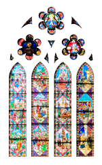
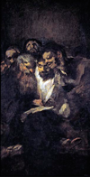
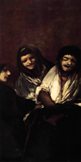
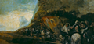
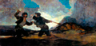
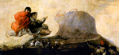
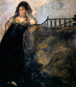
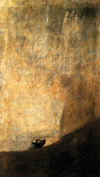

Actividades
1- Juega con una vidriera
Con lo que sabes sobre mapeado de texturas con transparencia haz todo tipo de pruebas usando esta imagen de una vidriera de la Catedral de León.
Se trata de un PNG con fondo transparente.
|

Vidriera Catedral de León (obra derivada) // Autor: Rodelar // Licencia : GNU Free Documentation License
|
2- Controla el "Cuerpo rígido"
Pasa un rato alterando las opciones de un Cuerpo rígido y haciendo pruebas para comprobar cómo la diferencia entre un comportamiento creíble y otro estrambótico puede estar en un solo parámetro.
3- Animación slow-motion
Haz una animación de una simulación con CPS (en las físicas del Mundo  ) a 24 y repítela a 100. La de 100 se comportará como una película de tipo slow-motion (cámara super-lenta).
) a 24 y repítela a 100. La de 100 se comportará como una película de tipo slow-motion (cámara super-lenta).
4- Bloques lógicos de CameraFPS
Una vez que has visto un poco sobre bloques lógicos en Material didáctico: Galileo en Pisa, anímate a ver los bloques de CameraFPS. Si te animas a tocar algo no olvides hacer antes una copia de seguridad.
Un reto: cambia los controles de dirección del cubo del artilugio para que respondan a los cursores en lugar de a "W", "S", "A" y "D".
5- Otras proyecciones
Aunque no hayamos profundizado en ello echa un vistazo a los diferentes modos de proyección para el mapeado UV. Practica sobre todo Proyectar desde vista, que es uno de los más útiles para nuestros fines.
6- GLSL en el museo
Intenta conseguir la sombra de un cuadro en la pared del museo con el que hemos trabajado.
7- Suelo y techo simulados
Realiza las texturas simuladas para el suelo y el techo del museo.
|

La lectura // Autor: Francisco de Goya // Licencia: Dominio público
|

Dos mujeres y un hombre // Autor: Francisco de Goya // Licencia: Dominio público
|

Peregrinación a la fuente de San Isidro (el santo oficio) // Autor: Francisco de Goya // Licencia: Dominio público
|

Duelo a garrotazos // Autor: Francisco de Goya // Licencia: Dominio público
|
|

Al aquelarre (Asmodea) // Autor: Francisco de Goya // Licencia: Dominio público
|

Una manola: doña Leocadia Zorrilla // Autor: Francisco de Goya // Licencia: Dominio público
|

Perro semihundido // Autor: Francisco de Goya // Licencia: Dominio público
|
Judith y Holofernes // Autor: Francisco de Goya // Licencia: Dominio público
|

Saturno devorando a un hijo// Autor: Francisco de Goya // Licencia: Dominio público
|

Romería de San Isidro // Autor: Francisco de Goya // Licencia: Dominio público
|

Aquelarre // Autor: Francisco de Goya // Licencia: Dominio público
|